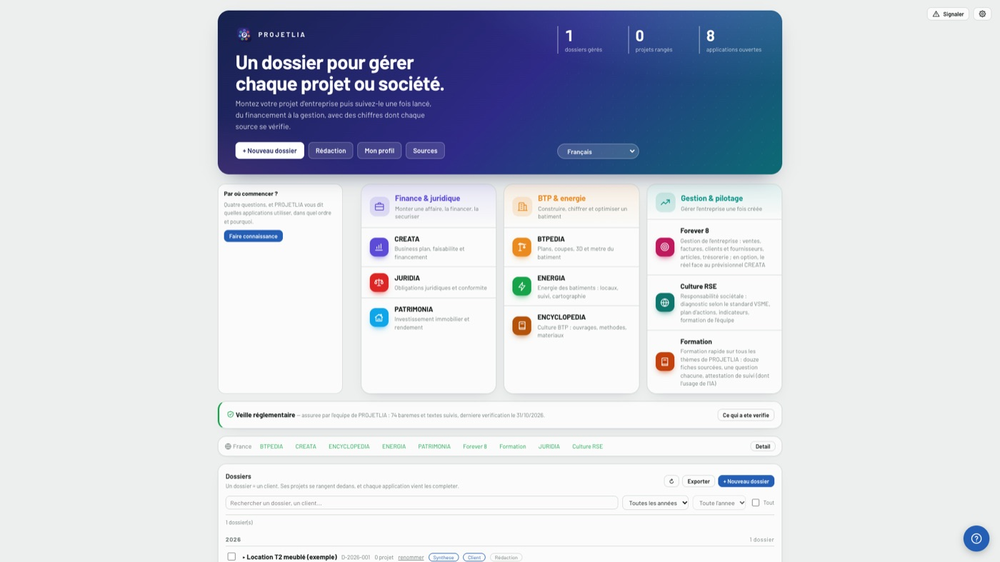
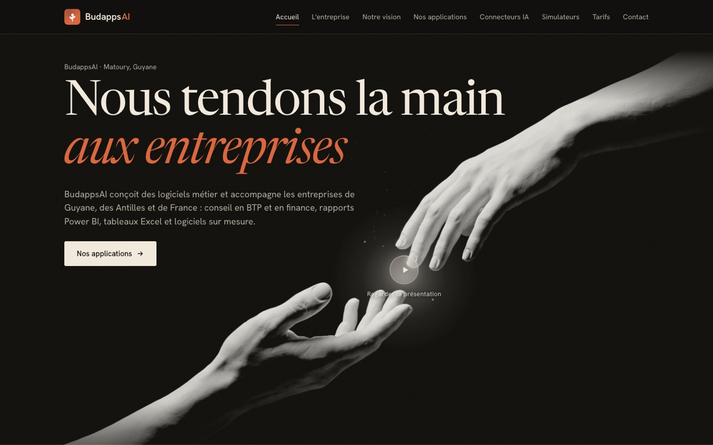
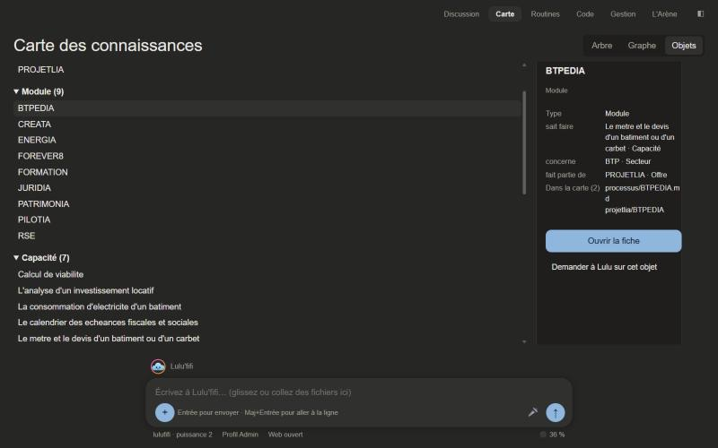

Mes constats
« L'IA a tout changé, vraiment tout, au travail comme dans ma vie privée : elle m'a rendu plus performant et plus utile sur beaucoup de sujets différents. »
Six projets menés avec l'IA, et surtout Claude Code. Pour chacun : ce qui a marché, ce qui a coûté cher, la leçon. Les chiffres viennent des journaux et des mesures des projets. Pour aller plus loin, chaque sujet a son guide pratique.
Créer des applications métier
Une suite de neuf applications, PROJETLIA, puis six modèles d'applications : je décris, Claude Code écrit, teste et publie, et je valide.

Ce qui a marché
- Une seule source pour chaque règle : un barème n'existe qu'à un endroit, lu par la page comme par le serveur.
- Des tests à chaque modification, et un « robot » qui clique sur tous les boutons d'une installation vierge.
- Un relecteur neuf avant chaque publication : il a trouvé des erreurs réelles, comme un paquet sorti avec un ancien module.
Ce qui a coûté cher
- Les lenteurs qui n'apparaissent qu'à l'échelle : 13,6 s pour lister 1 000 dossiers, ramenées à 75 ms après correction.
- Les différences entre Mac et Windows : une fonction écrite pour les deux n'est pas forcément essayée sur les deux.
- Les longues sessions : sans notes de mémoire courtes, on réexplique tout.
La leçon : Claude Code écrit vite. Ce qui rend une application vendable, c'est la discipline autour.
Je n'avais jamais connu cette sensation : celle de coder. Quand j'ai vu à quelle vitesse on pouvait créer une application, j'étais littéralement choqué.
Faire et tenir son site
budappsai.com, en ligne depuis le 30/09/2026 : un site statique, sans cookie ni traceur, construit et tenu avec Claude Code.

Ce qui a marché
- Un site léger, sans hébergement payant : la mise en ligne est un simple envoi.
- Un menu décrit une seule fois et reposé sur toutes les pages par un script.
- Des vérifications avant de dire « c'est fait » : largeur téléphone, liens, puis chaque adresse en ligne.
Ce qui a coûté cher
- Une demande dictée mal comprise, à refaire : une capture annotée lève plus vite le doute.
- Les fichiers lourds : un outil limite l'envoi à 10 Mo, le reste se dépose à la main.
- Un service de montage vidéo par IA essayé puis écarté : moins bon, lent, 20 s gratuites.
La leçon : Chaque phrase du site doit être vérifiée contre ce que le logiciel fait vraiment.
Ma première réaction : ce n'est pas si dur, j'aurais pu le faire bien avant. L'IA débloque les peurs nées d'idées reçues.
Créer un jeu 3D
Un jeu de combat original en 3D, qui s'ouvre d'un double-clic dans le navigateur et se joue à la manette ou au clavier.
Ce qui a marché
- Tester en jouant : au premier essai, les coups repoussaient trop loin. Corrigé le jour même.
- Faire jouer l'IA contre l'IA : un personnage gagnait 70 à 85 % de ses combats, 64 à 68 % après réglage.
- Chaque outil d'IA payant affiche son prix et attend l'accord avant de lancer.
Ce qui a coûté cher
- Un générateur d'images au style « clip-art », abandonné pour un autre.
- Une nouvelle mécanique, les mages, qui coûte plus que prévu et déséquilibre au début.
- Les contraintes du « sans serveur » qui compliquent chaque import de modèle 3D.
La leçon : Jouer soi-même, faire jouer l'IA contre elle-même, et ne payer un outil qu'après avoir vu son prix.
Pourquoi un jeu ? Et pourquoi pas ? Tester les limites de l'IA est presque un jeu pour moi. Rien ne me frustre, car tout est améliorable.
Travailler avec plusieurs IA
Claude Code pour construire, un modèle local, un grand modèle du cloud comme « professeur », des IA pour les avis de marché et la voix.
Ce qui a marché
- Un rôle par modèle, et chacun mesuré : score, temps et coût.
- Le grand modèle du cloud a servi une seule fois de professeur, avec accord et pour 3,19 $.
- Une règle écrite dans le code tient mieux qu'une consigne donnée à un petit modèle.
Ce qui a coûté cher
- Croire qu'un modèle plus gros est toujours meilleur : 2 points de mieux, mais six fois plus lent sur un portable.
- Les crédits de voix qui fondent : environ 13 500 par minute de vidéo doublée.
- Des avis d'IA payants qui ne font pas mieux qu'une règle gratuite.
La leçon : Chaque modèle a un rôle, un coût et une mesure ; celui qui ne fait pas mieux est retiré.
Sans débat, c'est Claude qui m'a le plus apporté, et aucune ne m'a vraiment déçu. Je l'ai compris en comparant les résultats.
Construire son IA locale
Lulu'fifi : une IA à moi, sur un PC portable avec une carte graphique de 6 Go, sans abonnement et sans que mes documents partent dans un cloud.

Ce qui a marché
- Partir petit et mesurer : 94 % de bonnes réponses en 14 s pour un modèle de 3 milliards, contre 96 % en 94 s pour un 8 milliards.
- Le système autour du modèle compte plus que le modèle : garde-fou des chiffres, calculette, relectrice, sources citées.
- Un banc d'examen avec une partie cachée, que l'IA qui code ne voit jamais.
Ce qui a coûté cher
- Le modèle qui invente des chiffres quand rien ne l'en empêche.
- Enregistrer une version avant la fin des tests : plus jamais.
- Une anonymisation trop naïve, refaite en trois passes.
La leçon : Un petit modèle bien entouré et mesuré vaut mieux qu'un gros modèle qu'on ne contrôle pas.
La raison principale : être indépendant. J'avais l'impression d'avoir mis au monde un bébé virtuel.
L'Arène, retour d'expérience d'une IA de trading
Plusieurs « joueurs » (un robot à règles, Lulu, des IA du cloud) gèrent chacun un portefeuille fictif, avec les mêmes règles, avant tout euro réel.
Retour d'expérience sur des tests, jamais un conseil en investissement. Investir comporte un risque de perte en capital, et des résultats passés, même simulés, ne préjugent pas des résultats futurs.
Ce qui a marché
- Rejouer le passé avant le présent, sur deux périodes différentes.
- Dans nos rejeux fictifs, les stratégies actives n'ont pas fait mieux qu'une gestion passive (simulation, sans valeur de conseil).
- L'argent réel reste sur mon clic : l'Arène prépare la fiche, c'est moi qui passe l'ordre.
Ce qui a coûté cher
- Les IA du cloud n'ont pas battu des règles simples : elles coûtaient à chaque appel, elles sont gelées.
- Une consigne ne suffit pas à un petit modèle : il faut une règle écrite dans le code.
- Les limites des courtiers et une tâche planifiée qui ne se lançait pas.
La leçon : Mesurer longtemps en fictif, garder simple, et ne jamais laisser une machine passer seule un ordre.
C'est la mode du moment : alors pourquoi ne pas tester, pour voir si c'est vrai ou faux. Garder le clic final, c'est garder la décision.
Les six guides réunis
Les six guides en PDF, avec leurs skills Claude Code prêtes à installer, envoyés ensemble par mail après le paiement. Usage personnel, sans abonnement.
Paiement sécurisé par Stripe. Contenu numérique envoyé par mail ; livraison par mail sous 24 heures ; pas de droit de rétractation pour ce contenu numérique, voir l'article 16 des conditions générales.